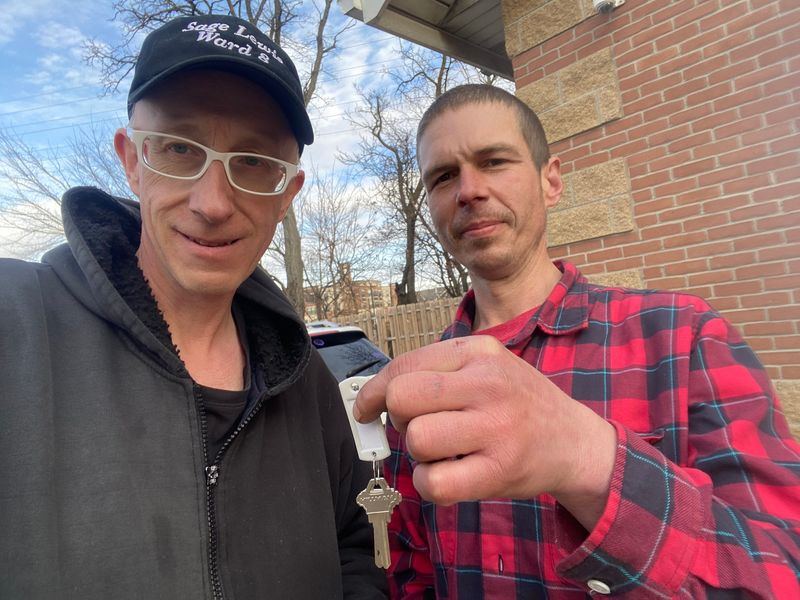

Timeline photos
I took this picture with Kenny Boldt on December 30, 2022.
He was so excited because he had just gotten the keys to his new apartment. He was moving indoors for the first time in over 5 years.
6 months later, he had been thrown out of the house for not being able to pay his $50/month rent.
I set that backdrop against the big news that US homelessness has hit the highest level since they began recording homeless numbers.
The answer you always hear in the news is that more affordable housing is THE answer. It is certainly a part of the answer. But it's not the only answer.
Why couldn't Kenny come up with $50? Why didn't he ask me for it? I pay $15/hour for all kinds of work. And Kenny very often works on jobs I offer. But he didn't come for any jobs once he got in his apartment. That might have been because he was now living on the Northside, and I'm on the Eastside.
Today, Kenny is quite literally out of his mind. He suffers from mental illness. But I've never seen it worse than it is right now. He's talking to people that I can't see. He's constantly "fixing" the furnace and other various mechanical items that don't need to be fixed.
Kenny was so embarrassed and ashamed that he lost his house. I have a video of him saying that he totally blamed himself for losing the house. I had never seen him lower than when he lost that house.
Honestly, I wish he had never gotten that house. He wasn't capable of dealing with being isolated and in charge of a home. Now he's worse than ever.
I've worked very closely with Kenny for 5 years. If I could do anything for him, I'd give him a tent in a secure, fenced area on the east side of Akron, where his friends live and where he knows where all the food and services are located. That's what he's able to handle.
He needs stability and security more than anything else. He's not ready for a house. I think we've proven that to be true. And I can't see that to change for months or years or maybe never.
Homelessness is not a monolith. It is a wide spectrum of people coming to homelessness for a wide variety of reasons. And no one in homeless authority has ever acknowledged that truth.